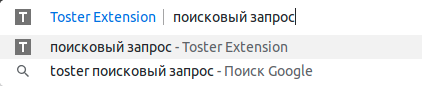
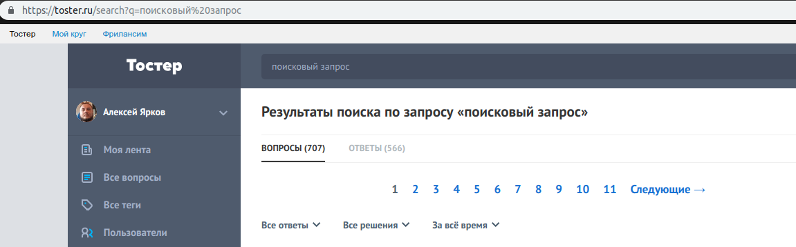

Специальные возможности
Поиск по Тостеру из адресной строки
Введите в адресную строку слово toster и нажмите пробел.

Теперь введите поисковый запрос, нажмите Enter и получите результат поиска по Тостеру в текущей вкладке.


Бэкап и восстановление настроек
Возможность сохранения и восстановления настроек может пригодиться при переустановке расширения, либо чтобы на другом компьютере воспроизвести настройки в точности как на первом.
Настройки сохраняются в файл с именем toster-extension.json и могут быть отредактированы в любом текстовом редакторе.
Если при восстановлении расширение поймет, что ему подсовывают невалидный файл (например отсутствуют какие-то опции или наоборот есть лишние), то будет показано предупреждение и восстановление будет отменено.

Флеш уведомления
Расширение умеет показывать флеш уведомления.
Например после изменении настроек, на всех вкладках, где открыт Тостер, будет показано уведомление.